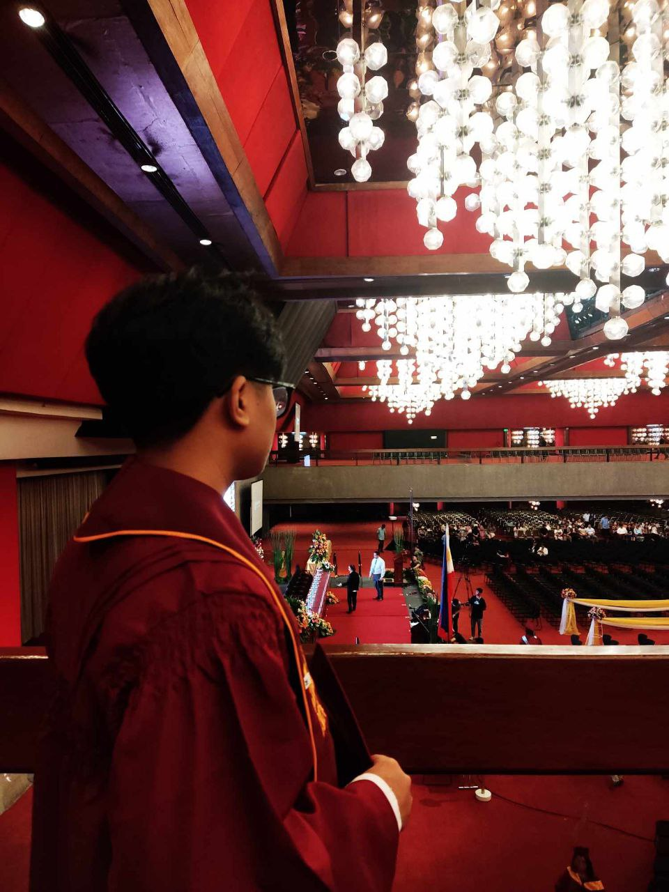

Intelligence (AI) fascinates me due to its potential to create systems that mimic human intelligence. The field’s applications in areas like healthcare and autonomous vehicles are both exciting and impactful.
Software Engineering is another area I’m drawn to. The process of designing, developing, and maintaining software applications aligns well with my interest in programming and system design.
Game Design also captures my interest for its blend of creativity and technology. Developing interactive entertainment and understanding game mechanics are aspects I find particularly engaging.
Cybersecurity appeals to me because of its crucial role in protecting information from cyber threats. The challenge of ensuring system security and addressing vulnerabilities is an essential and dynamic aspect of this field.
As I dive deeper into my studies in Computer Science, what excites me most is learning how coding works. It's fascinating to see how vast the world of programming is, from creating programs to building software that has the potential to be useful to others. The possibilities are endless, and each new concept I learn opens up more opportunities for creating something impactful.
I'm motivated by the desire to make a difference. I want to develop tools and applications that will improve people’s lives by making their daily tasks simpler. Technology has the power to ease burdens, and I aim to contribute to this by building software that addresses real-world problems.
The reason I chose Data Science as my focus is because of its significant role in understanding how computers function on a deeper level. It’s not just about the hardware but the intricate ways in which data is processed and applied. I’m drawn to the challenge of designing systems that can help users accomplish their goals more efficiently.
I learn best through hands-on experience, visual aids, and tutorials. Taking things step by step ensures that I understand not just the how but the why behind every function and process. This approach helps me to grasp new concepts more thoroughly and apply them in meaningful ways.
In my downtime, I enjoy relaxing by listening to music and watching films. This allows me to recharge, and when I'm ready, I return to my work with renewed energy and focus. This balance between relaxation and productivity helps me stay motivated and clear-headed.
Ultimately, I see my college education as the key to unlocking my future potential. By mastering my field of study, I believe I’ll be prepared to face any challenges that come my way and build a successful career. My goal is to use what I learn to become the best version of myself, both personally and professionally.
